Linear Algebra MicroSims
A collection of 126 interactive educational MicroSimulations for learning Applied Linear Algebra for AI and Machine Learning.
Vectors and Basic Operations
-
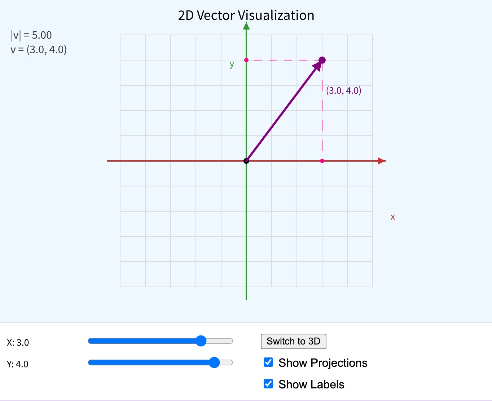 Interactive visualization of vectors in 2D and 3D coordinate systems with adjustable components, projection lines, and component labels.
-
 Interactive visualization of vector addition, subtraction, and scalar multiplication with draggable vectors and geometric constructions.
Interactive visualization of vector addition, subtraction, and scalar multiplication with draggable vectors and geometric constructions. -
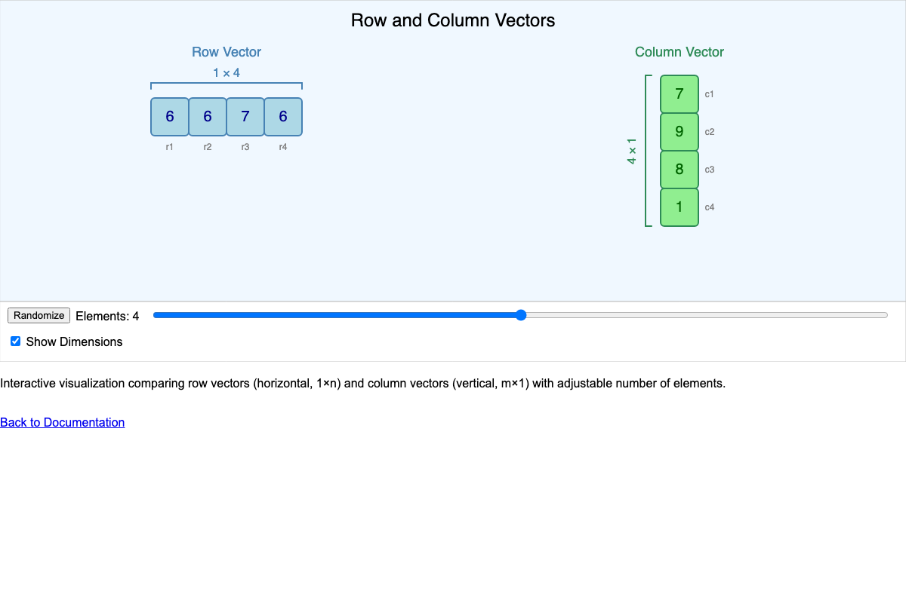 Interactive visualization comparing row vectors (horizontal, 1×n) and column vectors (vertical, m×1) to help students understand how orientation affects matrix operations.
-
 Interactive visualization comparing L1 (Manhattan), L2 (Euclidean), and L-infinity (Maximum) norms through their unit shapes and distance measurements.
Interactive visualization comparing L1 (Manhattan), L2 (Euclidean), and L-infinity (Maximum) norms through their unit shapes and distance measurements. -
 Interactive visualization comparing dot product (projection and angle) with cross product (perpendicular vector and parallelogram area).
Interactive visualization comparing dot product (projection and angle) with cross product (perpendicular vector and parallelogram area). -
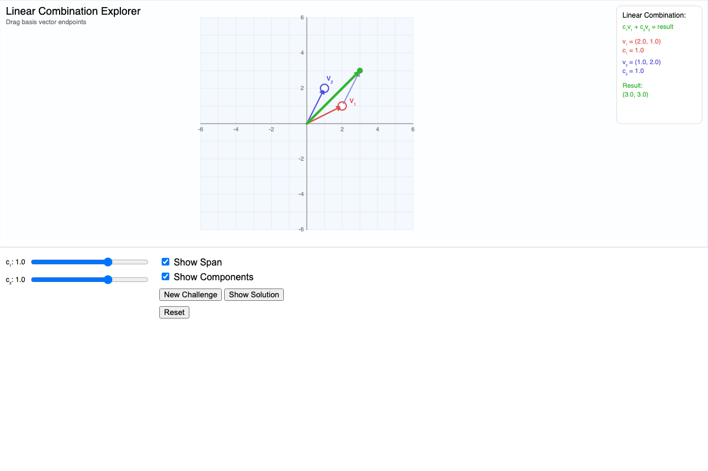 Interactive visualization of linear combinations with adjustable coefficients, target challenges, and span visualization.
Vector Spaces
-
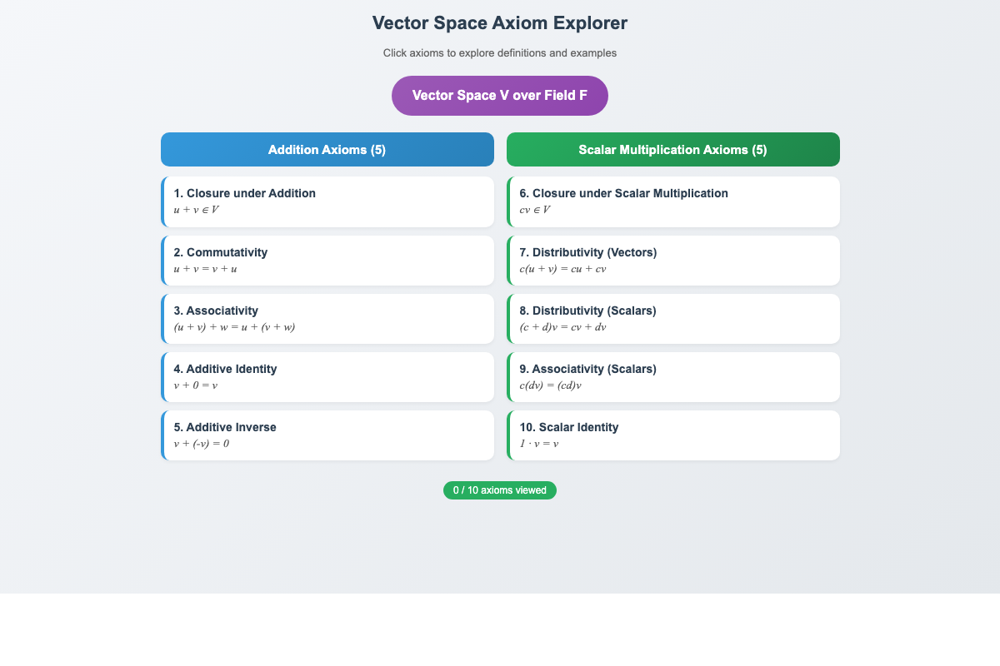 Interactive infographic for exploring the ten vector space axioms with hover definitions and concrete examples.
-
 Interactive gallery showcasing six diverse vector space examples with visual representations, zero vectors, and operation examples.
Interactive gallery showcasing six diverse vector space examples with visual representations, zero vectors, and operation examples. -
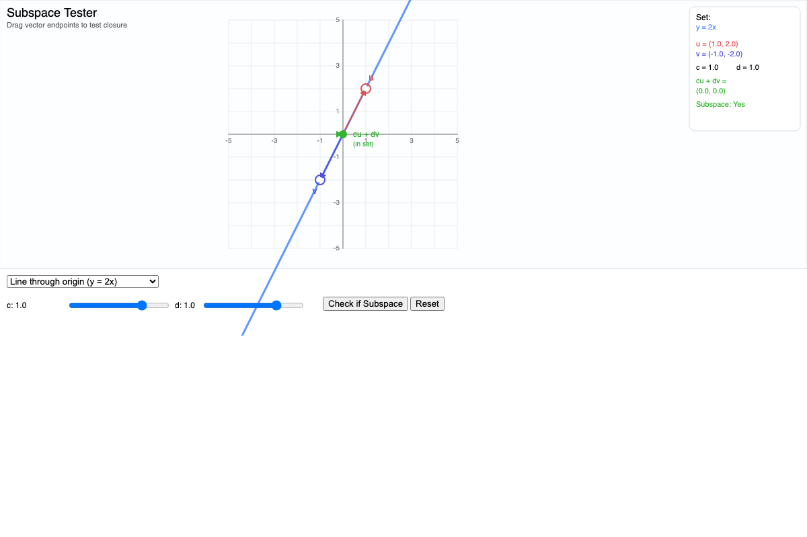 Interactive visualization to test whether sets are subspaces by checking closure under linear combinations.
-
 Interactive visualization showing how different inner products define different notions of length and angle.
Interactive visualization showing how different inner products define different notions of length and angle.
Matrices
-
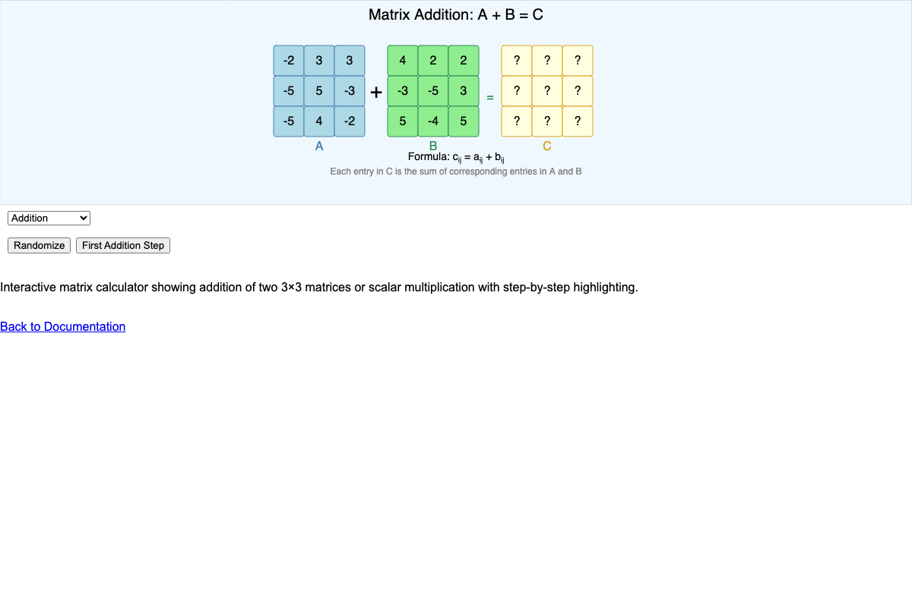 Interactive visualization demonstrating element-wise matrix addition and scalar multiplication with step-by-step calculation highlighting.
-
 Step-by-step visualization of matrix multiplication showing row-by-column dot product calculations with animation and highlighting.
Step-by-step visualization of matrix multiplication showing row-by-column dot product calculations with animation and highlighting. -
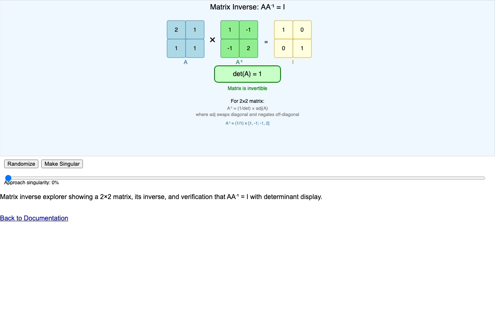 Interactive exploration of 2×2 matrix inversion with real-time computation, verification that AA⁻¹ = I, and visualization of singular matrices.
-
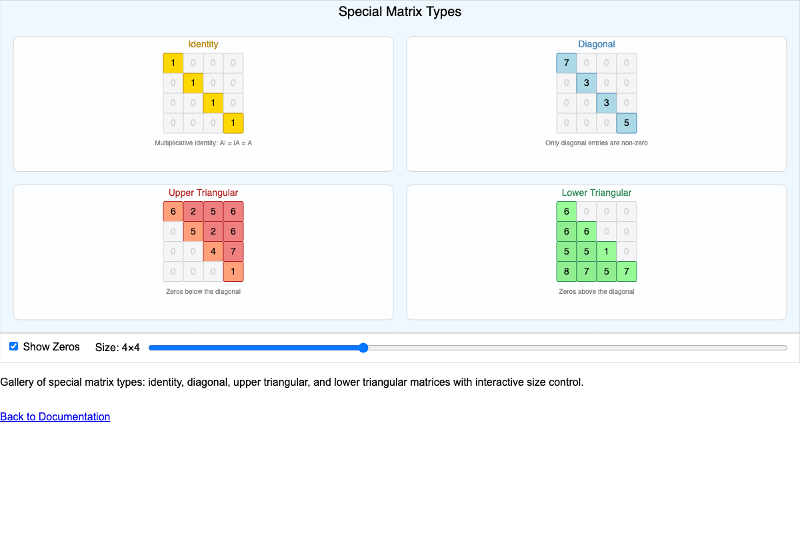 Visual gallery of special matrix types including identity, diagonal, upper triangular, and lower triangular matrices with interactive size control.
-
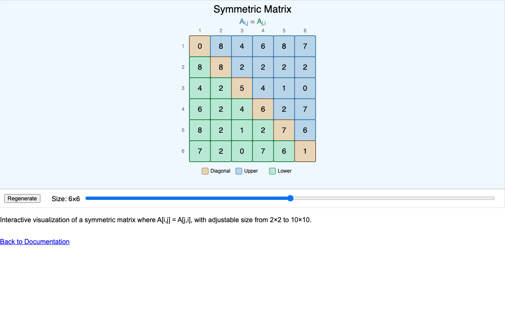 Interactive visualization demonstrating symmetric matrices where A[i,j] = A[j,i], with adjustable size from 2×2 to 10×10.
-
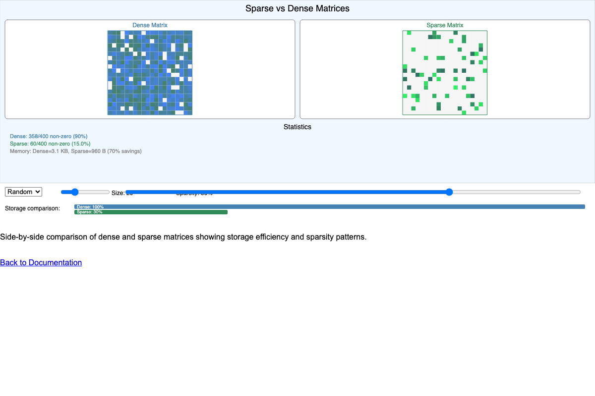 Side-by-side comparison of sparse and dense matrices showing structural differences, storage efficiency, and common sparsity patterns.
-
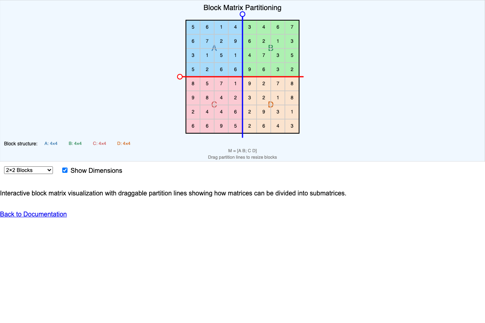 Interactive visualization of matrix partitioning into blocks with draggable partition lines showing how large matrices can be decomposed into submatrices.
Systems of Linear Equations
-
 Interactive visualization showing how systems of linear equations correspond to geometric intersections of lines (2D) or planes (3D).
Interactive visualization showing how systems of linear equations correspond to geometric intersections of lines (2D) or planes (3D). -
 Step-by-step animated guide through the Gaussian elimination algorithm with explanations.
Step-by-step animated guide through the Gaussian elimination algorithm with explanations. -
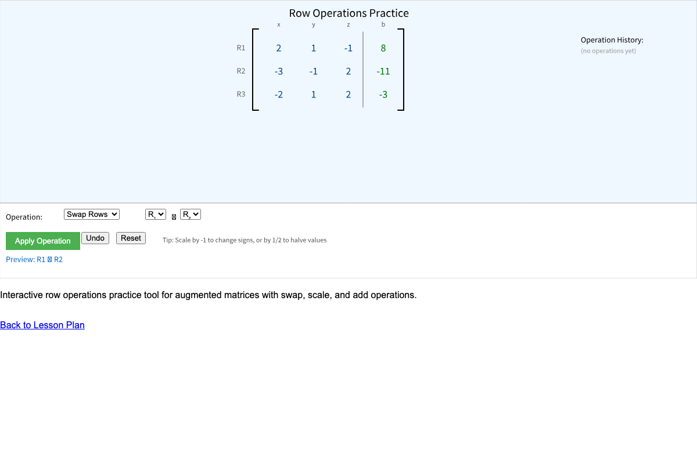 Interactive practice tool for applying elementary row operations on augmented matrices.
-
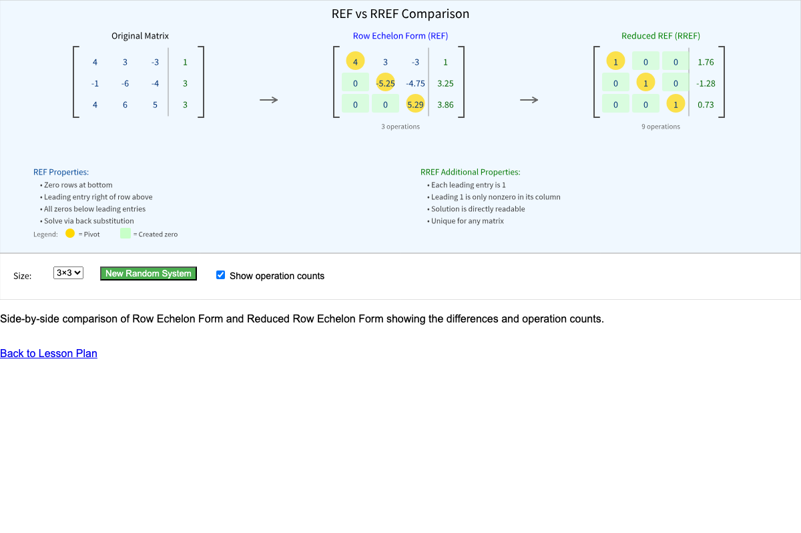 Side-by-side comparison of Row Echelon Form and Reduced Row Echelon Form with highlighted differences.
-
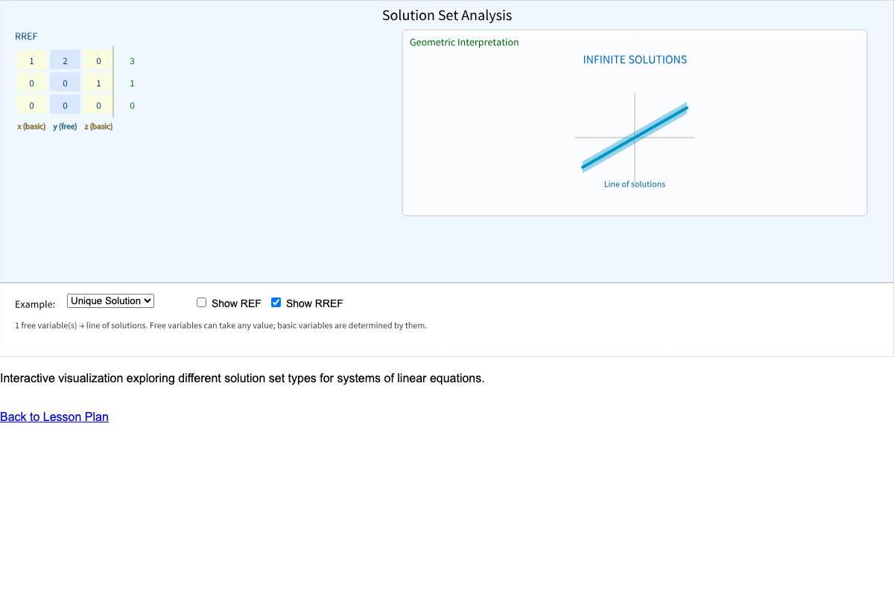 Explore how different systems produce unique solutions, infinite solutions (lines/planes), or no solution.
-
 Explore homogeneous systems Ax = 0 and visualize their null spaces as subspaces through the origin.
Explore homogeneous systems Ax = 0 and visualize their null spaces as subspaces through the origin. -
 Explore how ill-conditioned systems amplify small input errors into large solution changes.
Explore how ill-conditioned systems amplify small input errors into large solution changes.
Linear Transformations
-
 Interactive visualization showing how linear transformations preserve grid structure and are determined by where basis vectors map.
Interactive visualization showing how linear transformations preserve grid structure and are determined by where basis vectors map. -
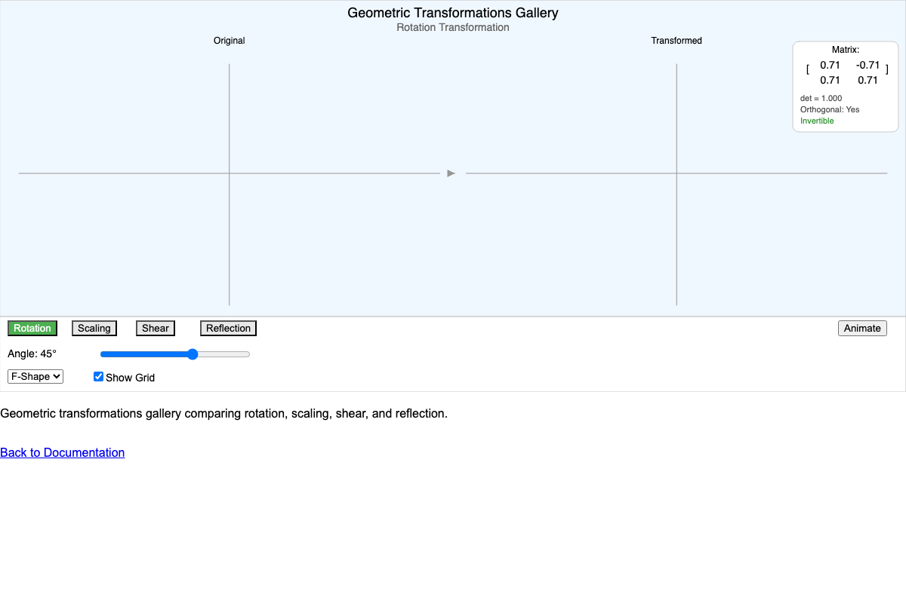 Compare and contrast rotation, scaling, shear, and reflection transformations with interactive controls and live matrix display.
-
 Demonstrate that the order of transformations matters by comparing T then S versus S then T side by side.
Demonstrate that the order of transformations matters by comparing T then S versus S then T side by side. -
 Interactive visualization of 2D rotation matrices showing the relationship between rotation angle and cos/sin matrix entries.
Interactive visualization of 2D rotation matrices showing the relationship between rotation angle and cos/sin matrix entries. -
 Interactive visualization demonstrating how orthogonal matrices (rotations and reflections) preserve lengths and angles when transforming shapes.
Interactive visualization demonstrating how orthogonal matrices (rotations and reflections) preserve lengths and angles when transforming shapes. -
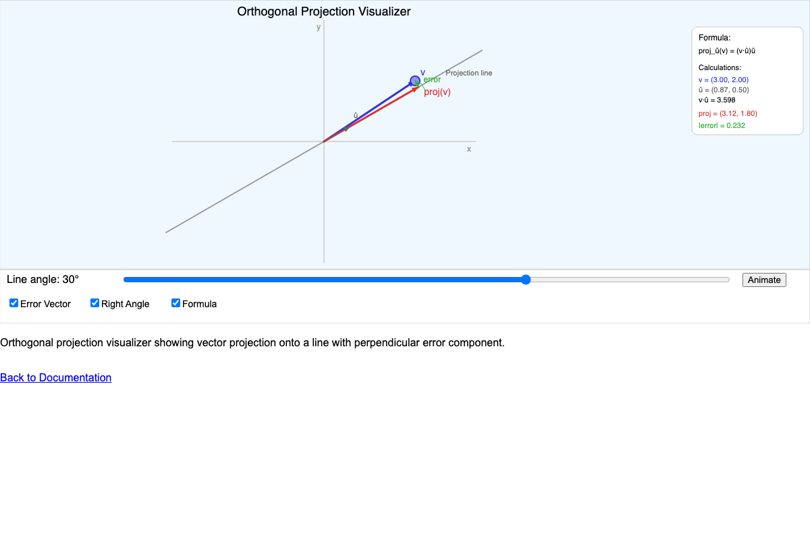 Visualize how vectors project onto lines with perpendicular error vectors and live formula display.
-
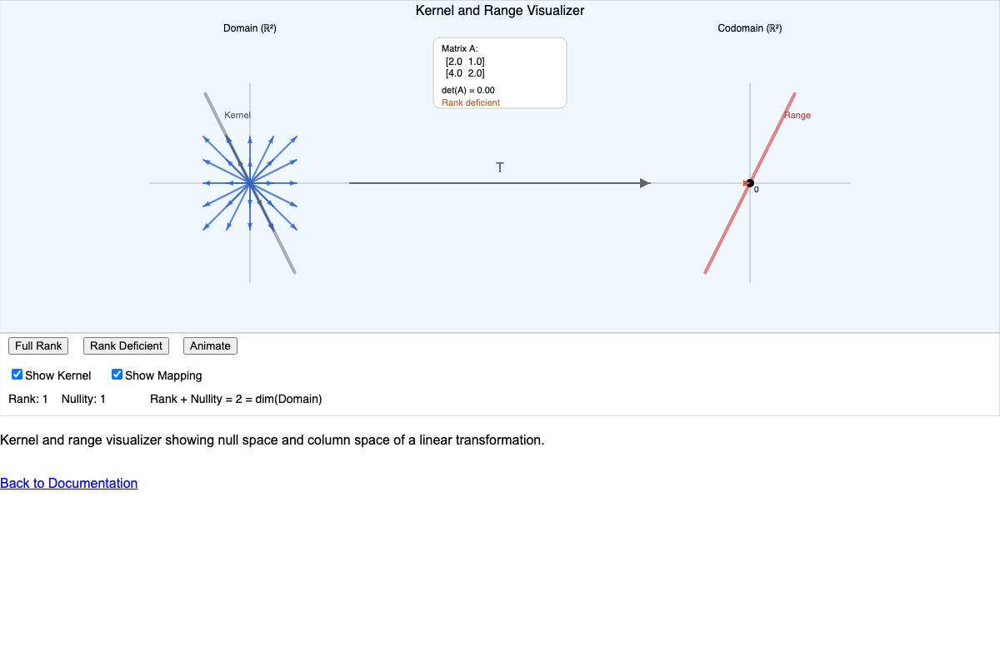 Visualize the kernel (null space) and range (column space) of linear transformations, demonstrating the rank-nullity theorem.
-
 Visualize how the same vector has different coordinate representations in different bases, with transition matrix display.
Visualize how the same vector has different coordinate representations in different bases, with transition matrix display. -
 Side-by-side comparison of standard and custom basis coordinate systems showing how the same vector has different coordinate representations.
Side-by-side comparison of standard and custom basis coordinate systems showing how the same vector has different coordinate representations.
Determinants
-
 Interactive calculator for computing 2×2 determinants with step-by-step visualization and geometric interpretation.
Interactive calculator for computing 2×2 determinants with step-by-step visualization and geometric interpretation. -
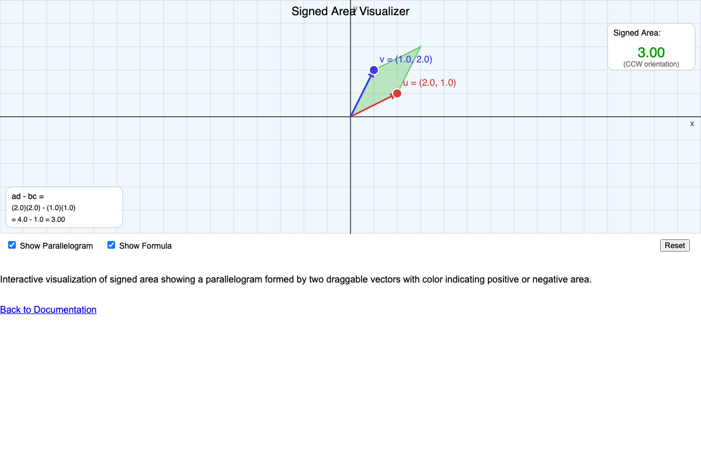 Visualize the signed area of a parallelogram formed by two vectors, showing how orientation affects the sign of the determinant.
-
 Step-by-step animation showing how to compute 3×3 determinants using the Rule of Sarrus.
Step-by-step animation showing how to compute 3×3 determinants using the Rule of Sarrus. -
 Step-by-step animation showing cofactor expansion for computing determinants of any size matrix.
Step-by-step animation showing cofactor expansion for computing determinants of any size matrix. -
 Interactive exploration of how row operations affect determinant values.
Interactive exploration of how row operations affect determinant values. -
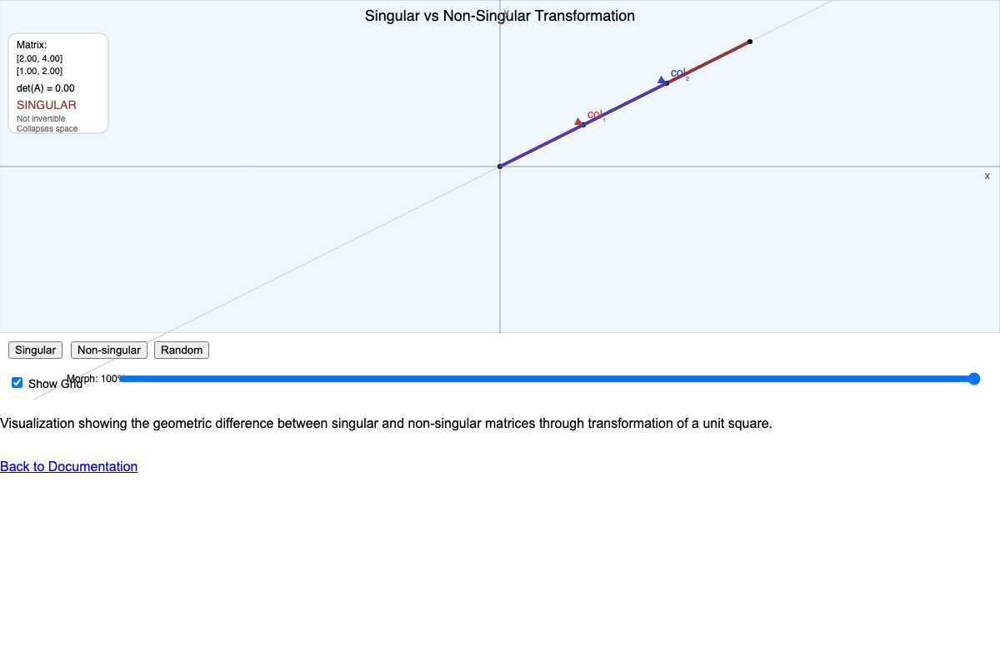 Visualize the geometric difference between singular and non-singular matrices through transformation animation.
-
 Step-by-step visualization of solving systems of equations using Cramer's Rule with determinants.
Step-by-step visualization of solving systems of equations using Cramer's Rule with determinants. -
 Visualize how 3×3 matrix transformations scale 3D volumes, connecting the determinant to geometric volume change.
Visualize how 3×3 matrix transformations scale 3D volumes, connecting the determinant to geometric volume change.
Eigenvalues and Eigenvectors
-
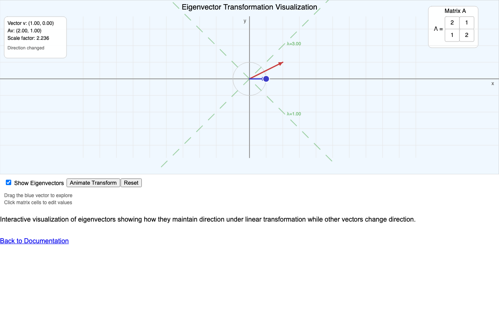 Interactive visualization demonstrating how eigenvectors maintain their direction under linear transformation while other vectors change direction.
-
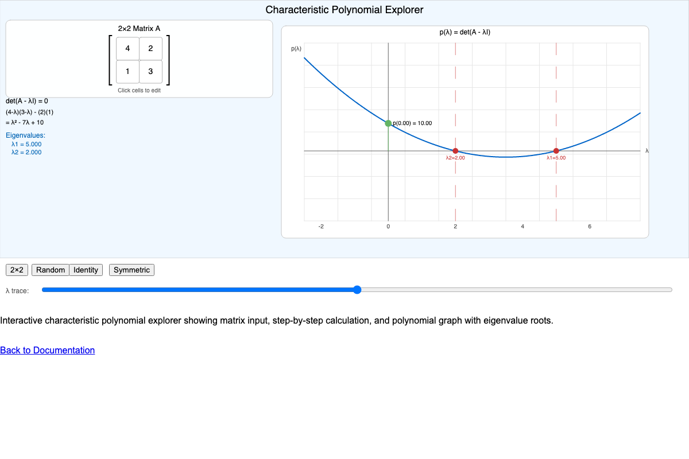 Interactive computation of characteristic polynomials and eigenvalues for 2×2 and 3×3 matrices with graphical visualization.
-
 3D visualization of eigenspaces showing how geometric multiplicity determines whether eigenspaces are lines or planes through the origin.
3D visualization of eigenspaces showing how geometric multiplicity determines whether eigenspaces are lines or planes through the origin. -
 Compare algebraic and geometric multiplicity across different matrix types to understand diagonalizability conditions.
Compare algebraic and geometric multiplicity across different matrix types to understand diagonalizability conditions. -
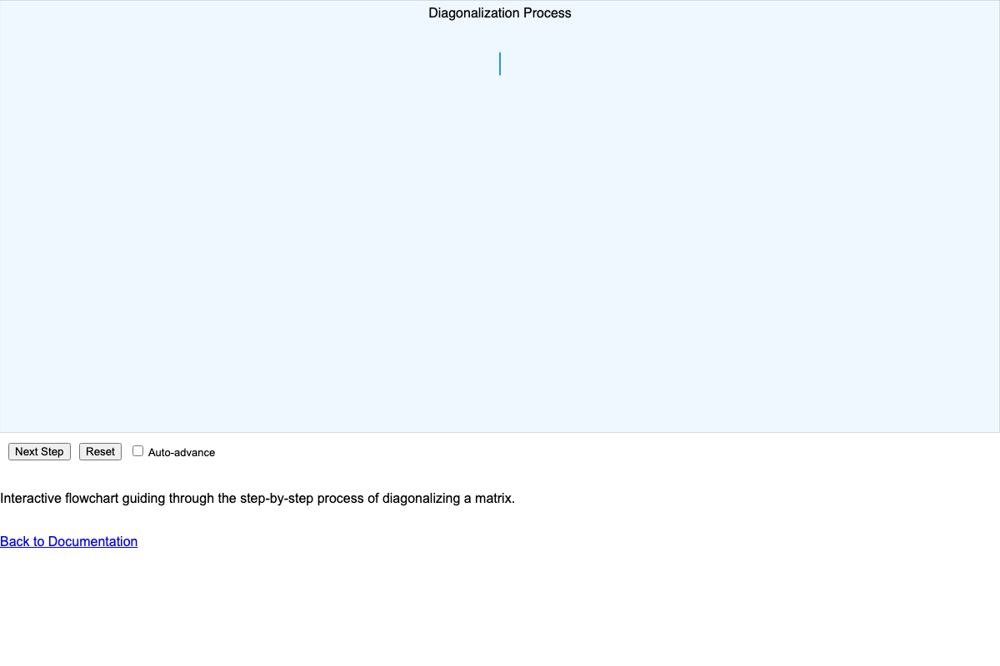 Interactive flowchart guiding through the step-by-step process of diagonalizing a matrix with decision points.
-
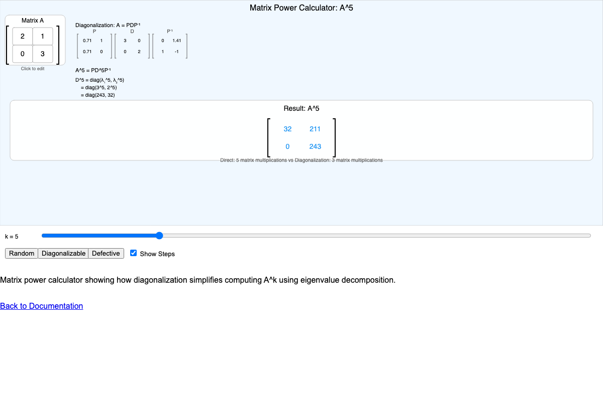 Demonstrates how diagonalization simplifies computing matrix powers using the eigenvalue decomposition A^k = PD^kP⁻¹.
-
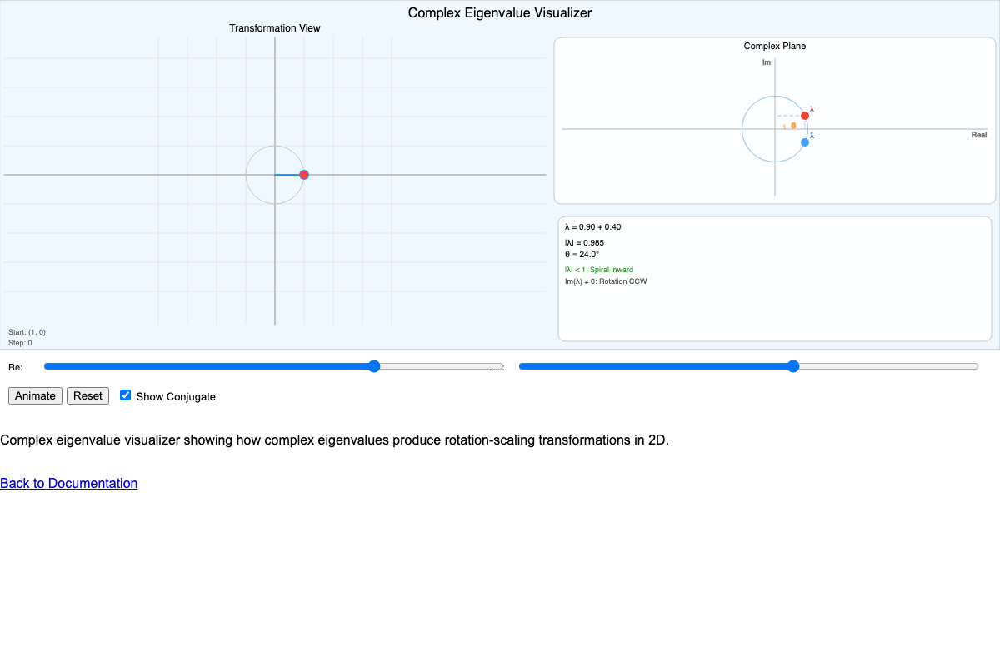 Visualize how complex eigenvalues λ = a + bi correspond to rotation-scaling transformations in 2D.
-
 Interactive demonstration of the spectral theorem showing how symmetric matrices decompose into orthogonal eigenvectors and real eigenvalues.
Interactive demonstration of the spectral theorem showing how symmetric matrices decompose into orthogonal eigenvectors and real eigenvalues. -
 Visualization of the power iteration method for finding the dominant eigenvalue and eigenvector through repeated matrix-vector multiplication.
Visualization of the power iteration method for finding the dominant eigenvalue and eigenvector through repeated matrix-vector multiplication. -
 Interactive hub-and-spoke infographic showing how eigenanalysis concepts connect to real-world applications in machine learning, AI, and science.
Interactive hub-and-spoke infographic showing how eigenanalysis concepts connect to real-world applications in machine learning, AI, and science.
Orthogonality and Least Squares
-
 Step-by-step 3D visualization of Gram-Schmidt orthonormalization showing projections and construction of orthonormal vectors.
Step-by-step 3D visualization of Gram-Schmidt orthonormalization showing projections and construction of orthonormal vectors. -
 Detailed step-by-step 3D visualization of Gram-Schmidt orthonormalization showing projection computation, subtraction, and normalization phases.
Detailed step-by-step 3D visualization of Gram-Schmidt orthonormalization showing projection computation, subtraction, and normalization phases. -
 Interactive visualization demonstrating how orthonormal bases simplify coordinate finding through inner products.
Interactive visualization demonstrating how orthonormal bases simplify coordinate finding through inner products. -
3D visualization of vector projection onto subspaces showing the projection as the closest point and the orthogonal error vector.
-
Interactive visualization of least squares as projection showing the geometric relationship between b, Ax-hat, and the error vector with dual regression and geometric views.
-
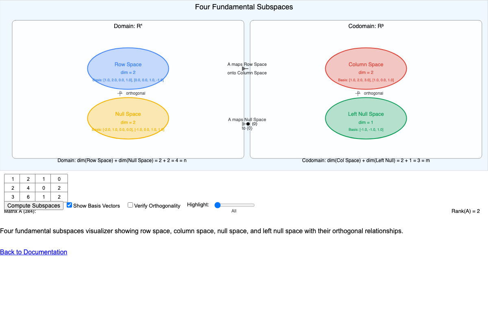 Visualize the four fundamental subspaces of a matrix and their orthogonal relationships, demonstrating the Fundamental Theorem of Linear Algebra.
-
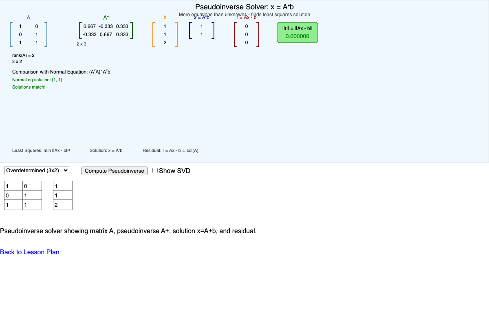 Interactive exploration of the Moore-Penrose pseudoinverse for solving least squares problems, including overdetermined, underdetermined, and rank-deficient systems with SVD visualization.
Matrix Decompositions
-
 Step-by-step visualization of LU decomposition showing how Gaussian elimination produces L and U matrices.
Step-by-step visualization of LU decomposition showing how Gaussian elimination produces L and U matrices. -
 Interactive 3D visualization showing how matrix rank relates to the column space, with column vectors displayed geometrically and row echelon form computation.
Interactive 3D visualization showing how matrix rank relates to the column space, with column vectors displayed geometrically and row echelon form computation. -
 Interactive 3D visualization of quadratic forms showing how eigenvalue signs determine positive definiteness.
Interactive 3D visualization of quadratic forms showing how eigenvalue signs determine positive definiteness. -
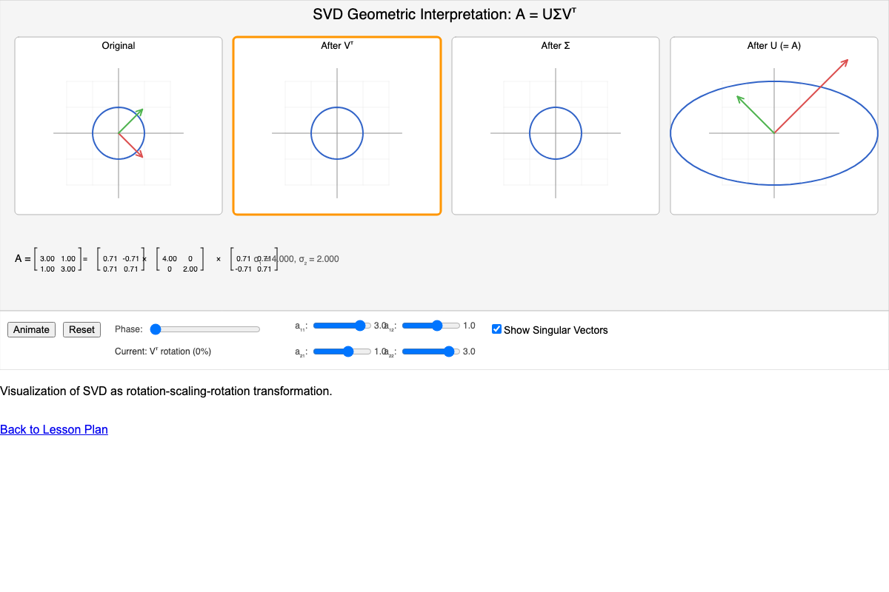 Visualize SVD as a sequence of rotation-scaling-rotation transformations on the unit circle.
-
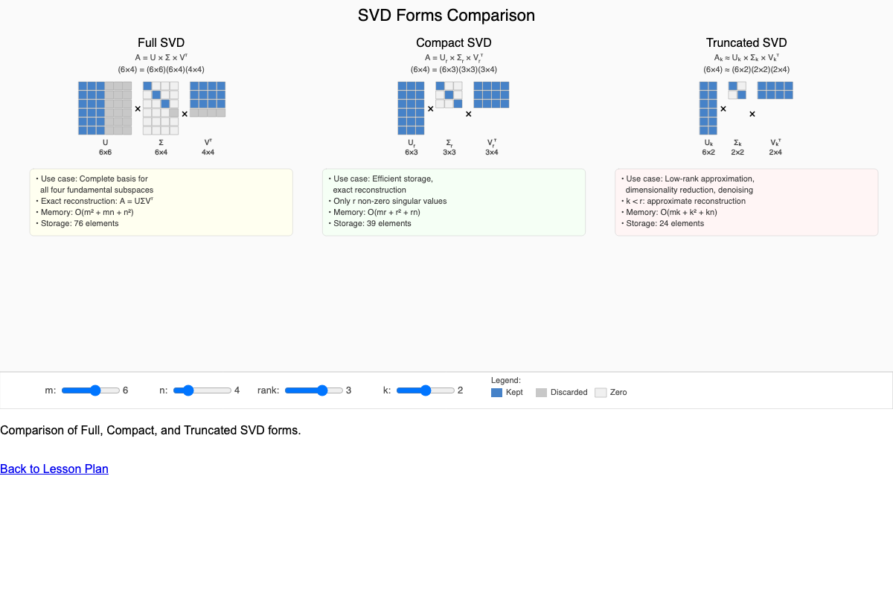 Visual comparison of Full, Compact, and Truncated SVD showing matrix dimensions and storage requirements.
-
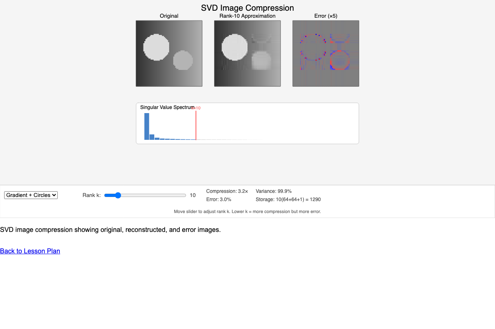 Interactive demonstration of image compression using truncated SVD.
-
 Visualize how condition number affects the sensitivity of linear system solutions to perturbations.
Visualize how condition number affects the sensitivity of linear system solutions to perturbations. -
 Interactive decision tree for choosing the right matrix decomposition based on your problem.
Interactive decision tree for choosing the right matrix decomposition based on your problem.
Data Science Applications
-
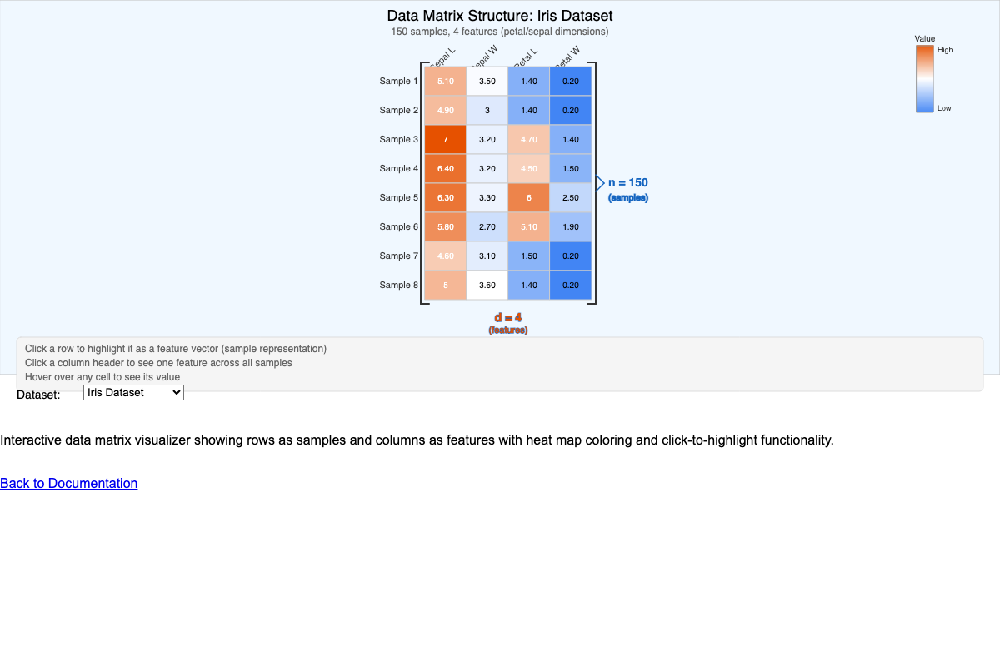 Interactive visualization showing the structure of data matrices with rows as samples and columns as features, including heat map coloring.
-
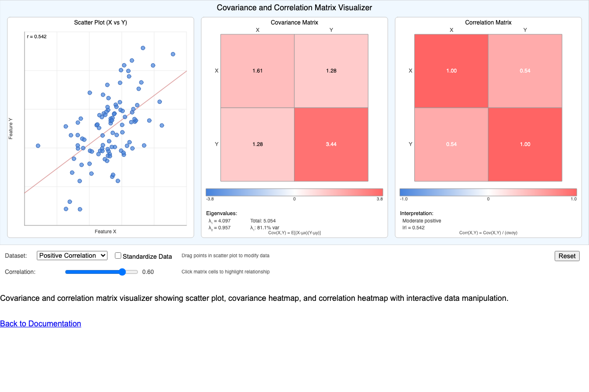 Interactive exploration of how covariance and correlation capture relationships between features through scatter plots and heatmaps.
-
 Interactive visualization demonstrating Principal Component Analysis step by step, from raw data through centering, eigenvector computation, and projection.
Interactive visualization demonstrating Principal Component Analysis step by step, from raw data through centering, eigenvector computation, and projection. -
 Interactive visualization for learning to use scree plots and cumulative variance to select the optimal number of principal components.
Interactive visualization for learning to use scree plots and cumulative variance to select the optimal number of principal components. -
 Interactive visualization of linear regression showing how the best-fit line minimizes squared errors with draggable data points and loss surface heatmap.
Interactive visualization of linear regression showing how the best-fit line minimizes squared errors with draggable data points and loss surface heatmap. -
 Interactive visualization showing how L1 and L2 regularization constrain model weights geometrically, demonstrating why L1 produces sparse solutions.
Interactive visualization showing how L1 and L2 regularization constrain model weights geometrically, demonstrating why L1 produces sparse solutions.
Neural Networks
-
 Interactive visualization of a neural network layer showing how matrix-vector multiplication implements the forward pass with various activation functions.
Interactive visualization of a neural network layer showing how matrix-vector multiplication implements the forward pass with various activation functions. -
 Interactive visualization of neural network architecture showing layers, neurons, weight matrix dimensions, and parameter counts.
Interactive visualization of neural network architecture showing layers, neurons, weight matrix dimensions, and parameter counts. -
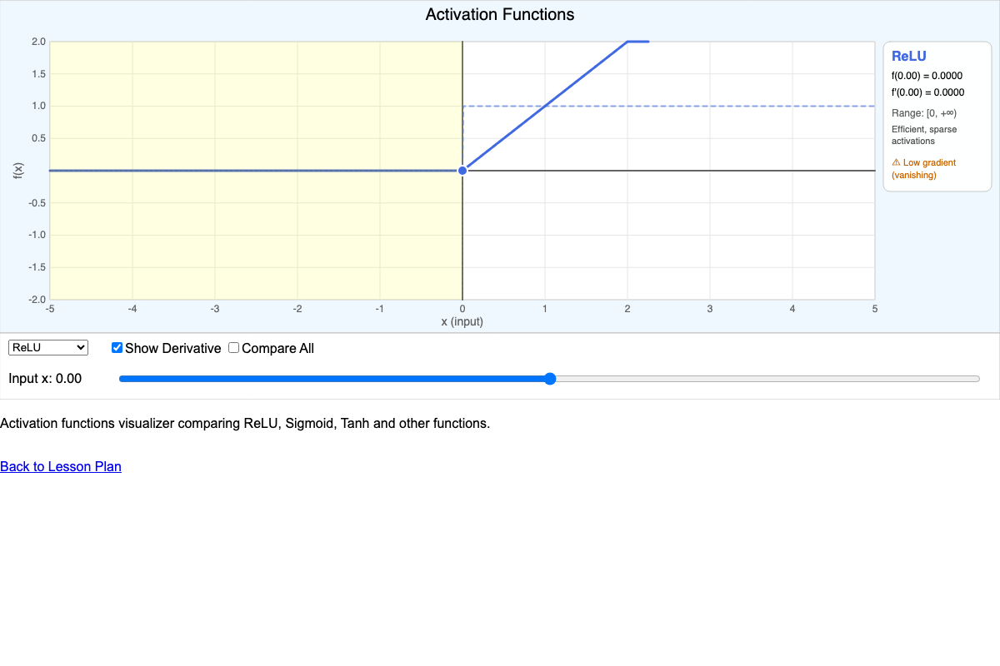 Interactive comparison of neural network activation functions including ReLU, Sigmoid, Tanh, Leaky ReLU, and Softplus with derivative visualization.
-
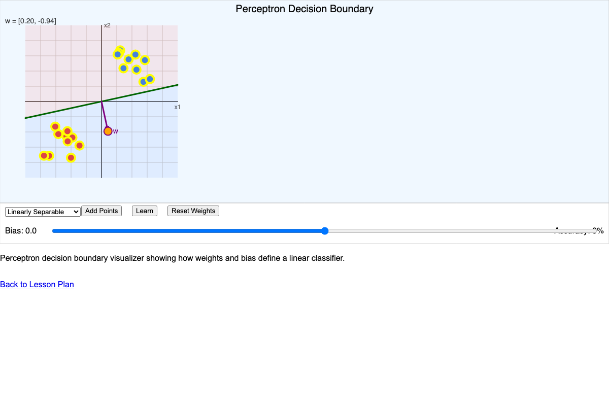 Interactive visualization showing how perceptron weights and bias define a linear decision boundary for binary classification.
-
 Step-by-step visualization of forward propagation through a neural network showing matrix operations at each layer.
Step-by-step visualization of forward propagation through a neural network showing matrix operations at each layer. -
 Step-by-step visualization of backpropagation showing how gradients flow backward through a neural network via the chain rule.
Step-by-step visualization of backpropagation showing how gradients flow backward through a neural network via the chain rule. -
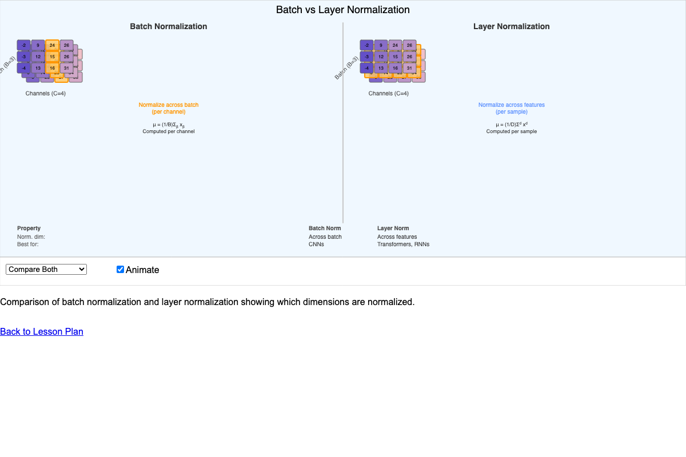 Visual comparison of batch normalization and layer normalization showing which tensor dimensions each technique normalizes.
-
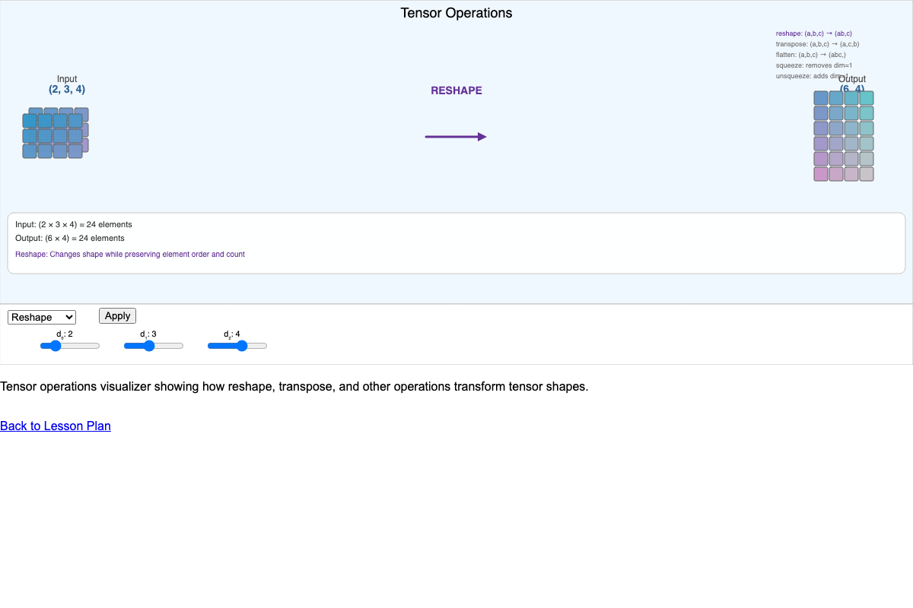 Interactive visualization of common tensor operations including reshape, transpose, flatten, squeeze, and unsqueeze.
Optimization
-
 Visualize how gradient descent optimization navigates loss surfaces and how learning rate affects convergence behavior.
Visualize how gradient descent optimization navigates loss surfaces and how learning rate affects convergence behavior. -
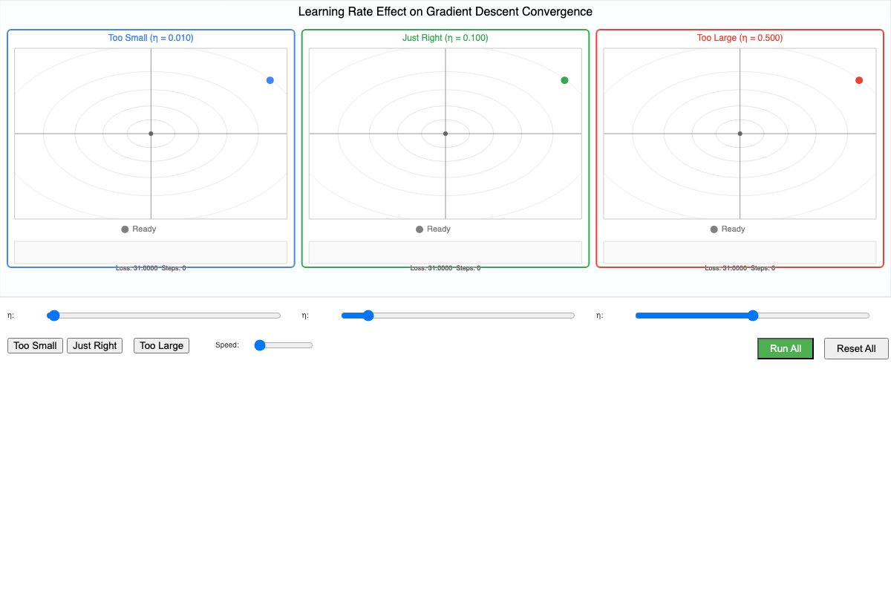 Interactive side-by-side comparison showing how different learning rates affect gradient descent optimization, demonstrating convergence, oscillation, and divergence.
-
 Interactive flowchart showing the complete ML pipeline from raw data to trained model with code examples and detailed explanations.
Interactive flowchart showing the complete ML pipeline from raw data to trained model with code examples and detailed explanations. -
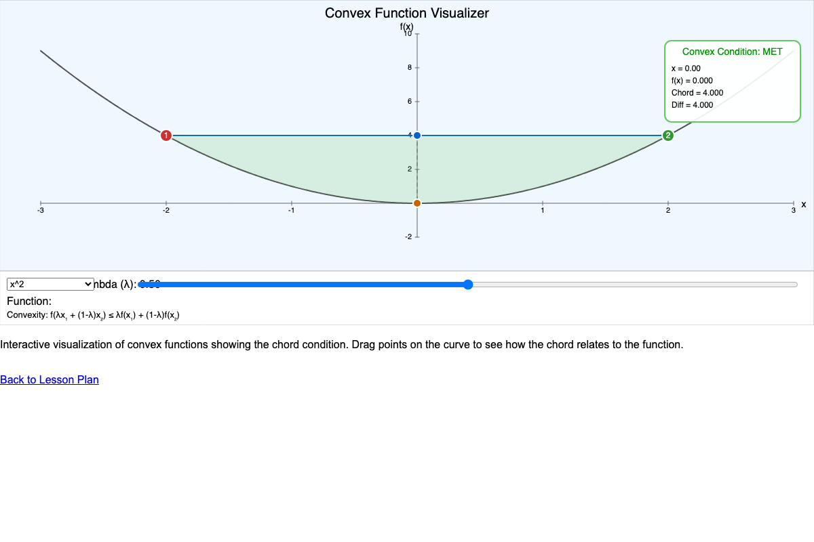 Interactive visualization of convex functions and their properties for optimization.
-
 Side-by-side comparison of Newton's method and gradient descent showing convergence characteristics.
Side-by-side comparison of Newton's method and gradient descent showing convergence characteristics. -
 Interactive visualization of how the Hessian matrix captures surface curvature for optimization.
Interactive visualization of how the Hessian matrix captures surface curvature for optimization. -
 Visualize stochastic gradient descent trajectories and noise characteristics.
Visualize stochastic gradient descent trajectories and noise characteristics. -
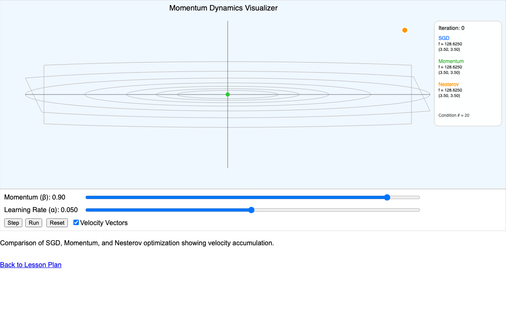 Interactive visualization of momentum in optimization showing how it helps overcome local minima.
-
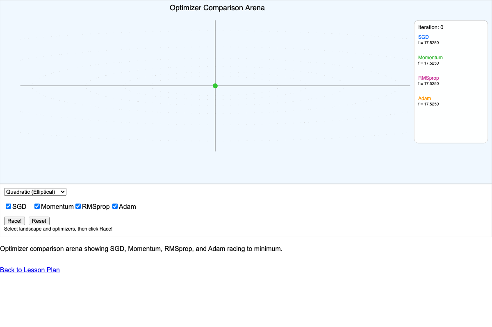 Compare different optimization algorithms side-by-side on the same loss surface.
-
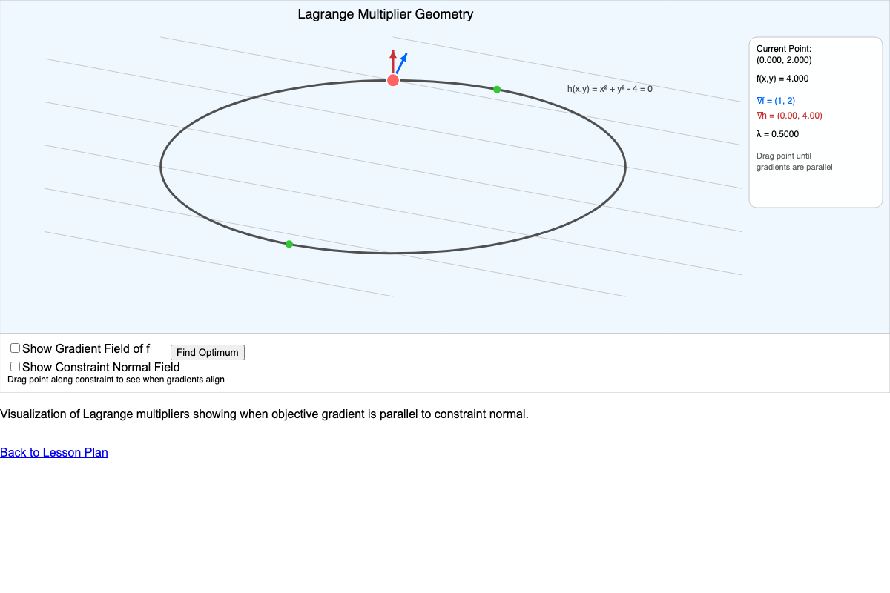 Interactive visualization of Lagrange multipliers for constrained optimization.
-
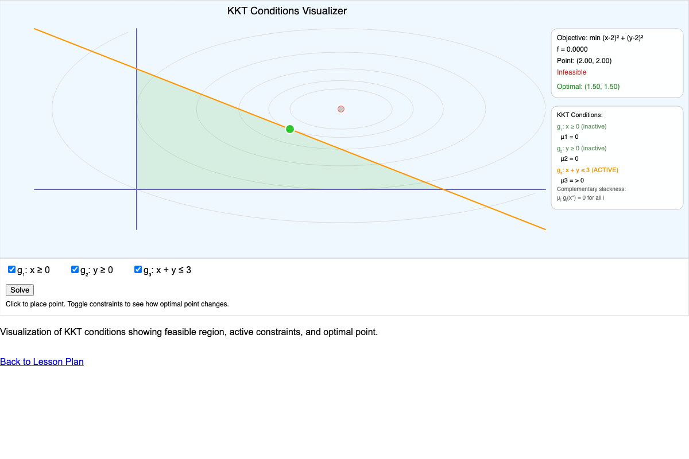 Visualize the Karush-Kuhn-Tucker conditions for constrained optimization problems.
Transformers and NLP
-
 Interactive visualization of the attention mechanism used in transformer models.
Interactive visualization of the attention mechanism used in transformer models. -
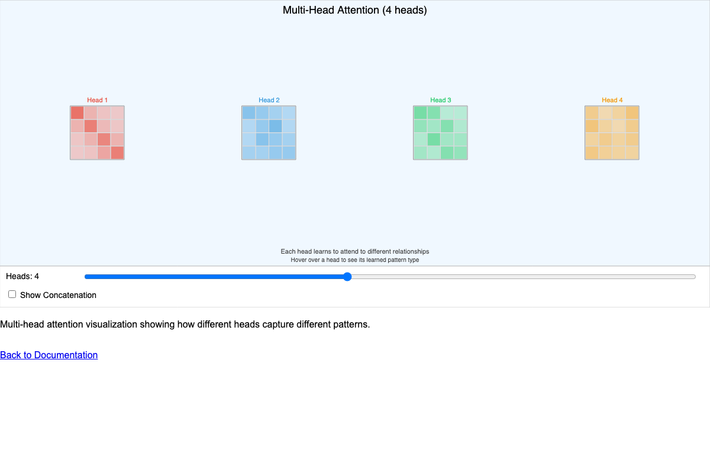 Visualize how multi-head attention allows the model to attend to different positions simultaneously.
-
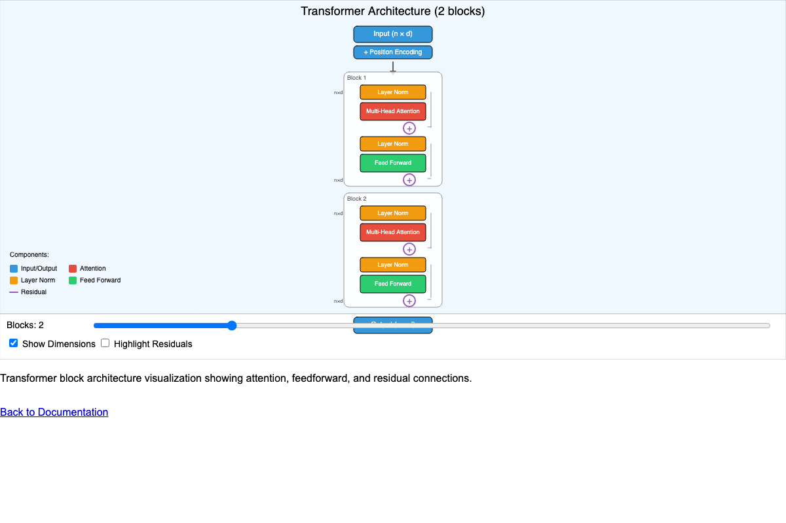 Interactive visualization of a complete transformer block showing self-attention and feed-forward layers.
-
 Explore word and document embeddings in high-dimensional space projected to 2D/3D.
Explore word and document embeddings in high-dimensional space projected to 2D/3D. -
Cosine and Euclidean Similarity
 Compare cosine similarity and Euclidean distance for measuring vector relationships.
Compare cosine similarity and Euclidean distance for measuring vector relationships. -
 Visualize Low-Rank Adaptation (LoRA) for efficient fine-tuning of large language models.
Visualize Low-Rank Adaptation (LoRA) for efficient fine-tuning of large language models. -
 Explore smooth transitions in latent space by interpolating between embeddings.
Explore smooth transitions in latent space by interpolating between embeddings.
Computer Vision
-
 Interactive visualization showing how pixel values in a matrix correspond to grayscale image appearance with hover highlighting and edit mode.
Interactive visualization showing how pixel values in a matrix correspond to grayscale image appearance with hover highlighting and edit mode. -
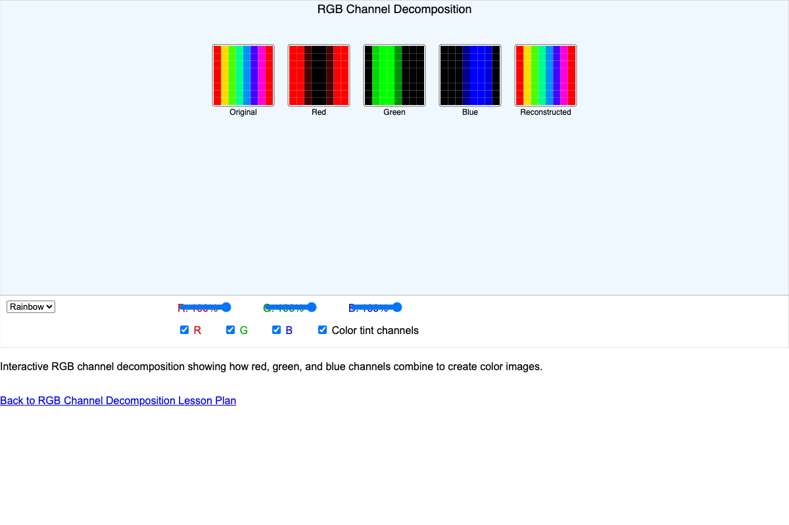 Interactive visualization showing how RGB color channels combine to form color images with channel isolation and intensity controls.
-
 Interactive visualization of the convolution operation showing how kernels slide across images with stride and padding controls.
Interactive visualization of the convolution operation showing how kernels slide across images with stride and padding controls. -
 Step-by-step visualization of image convolution showing how kernels slide across images to compute filtered outputs with multiple kernel types.
Step-by-step visualization of image convolution showing how kernels slide across images to compute filtered outputs with multiple kernel types. -
 Side-by-side comparison of image filters including blur, sharpen, edge detection, and emboss effects with kernel visualization.
Side-by-side comparison of image filters including blur, sharpen, edge detection, and emboss effects with kernel visualization. -
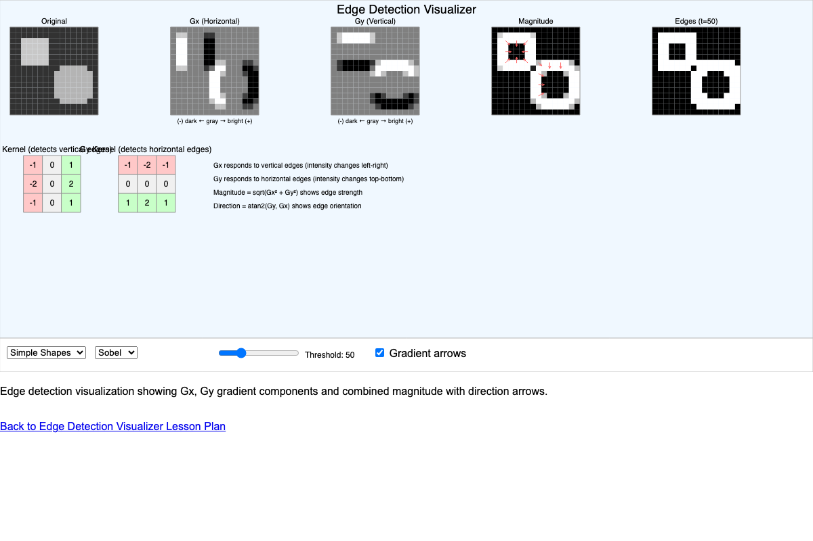 Interactive visualization of Sobel, Prewitt, and Scharr edge detection operators showing gradient components, magnitude, and thresholded edges.
-
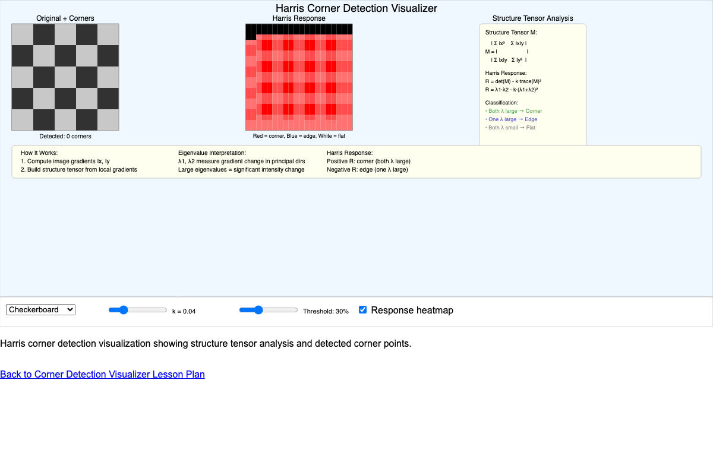 Interactive Harris corner detection visualization showing structure tensor eigenvalue analysis and response heatmaps.
-
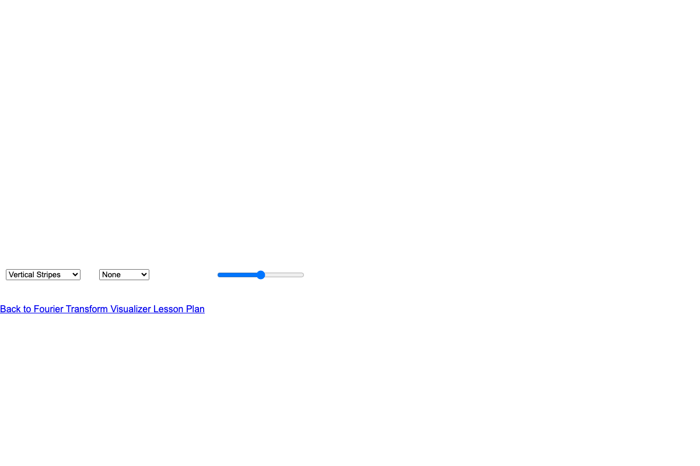 Interactive 2D Discrete Fourier Transform visualization showing spatial-frequency relationship, magnitude/phase spectra, and frequency filtering.
-
 Interactive demonstration of perspective transformations using homography matrices with draggable corner points and real-time matrix computation.
Interactive demonstration of perspective transformations using homography matrices with draggable corner points and real-time matrix computation. -
 Interactive demonstration of image compression using truncated Singular Value Decomposition with quality metrics.
Interactive demonstration of image compression using truncated Singular Value Decomposition with quality metrics.
3D Vision and Geometry
-
Interactive demonstration of the pinhole camera model showing how intrinsic parameters affect 3D-to-2D projection.
-
 Interactive demonstration of camera calibration showing lens distortion effects, checkerboard corner detection, and distortion correction.
Interactive demonstration of camera calibration showing lens distortion effects, checkerboard corner detection, and distortion correction. -
 Interactive demonstration of epipolar constraints in stereo vision showing epipolar lines, planes, and depth from disparity.
Interactive demonstration of epipolar constraints in stereo vision showing epipolar lines, planes, and depth from disparity. -
 Interactive demonstration of 3D point recovery from stereo correspondences showing triangulation accuracy and noise effects.
Interactive demonstration of 3D point recovery from stereo correspondences showing triangulation accuracy and noise effects. -
 Interactive exploration of point cloud data with different datasets, color modes, downsampling, and surface normal visualization.
Interactive exploration of point cloud data with different datasets, color modes, downsampling, and surface normal visualization.
Autonomous Systems
-
 Interactive demonstration of different 3D coordinate system conventions and handedness including OpenGL, DirectX, ROS, and camera frames.
Interactive demonstration of different 3D coordinate system conventions and handedness including OpenGL, DirectX, ROS, and camera frames. -
Interactive demonstration of how Euler angles (yaw, pitch, roll) compose to form 3D rotations with multiple conventions and gimbal lock warning.
-
Interactive demonstration of gimbal lock using a physical gimbal mechanism with three nested rings showing loss of degree of freedom.
-
Interactive demonstration of quaternion rotation representation with axis-angle conversion, rotation application, and composition.
-
Interactive visualization of rigid body transform composition in a robot arm kinematic chain showing forward kinematics.
-
 Interactive visualization of the Kalman filter showing the predict-update cycle, uncertainty propagation, and noise effects on state estimation.
Interactive visualization of the Kalman filter showing the predict-update cycle, uncertainty propagation, and noise effects on state estimation. -
 Interactive demonstration of GPS and IMU sensor fusion using Kalman filtering, showing how combining complementary sensors improves accuracy.
Interactive demonstration of GPS and IMU sensor fusion using Kalman filtering, showing how combining complementary sensors improves accuracy. -
 Interactive 3D visualization of LIDAR point cloud data demonstrating ground segmentation, object clustering, and coloring modes.
Interactive 3D visualization of LIDAR point cloud data demonstrating ground segmentation, object clustering, and coloring modes. -
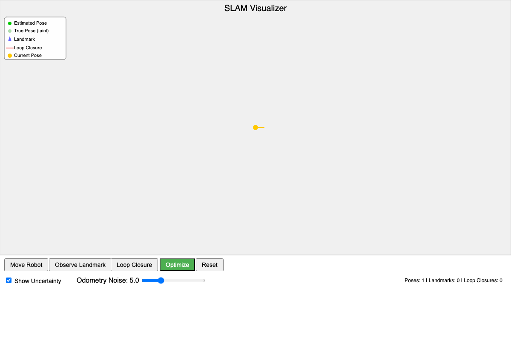 Interactive visualization of Simultaneous Localization and Mapping showing robot trajectory, landmark mapping, and loop closure optimization.
-
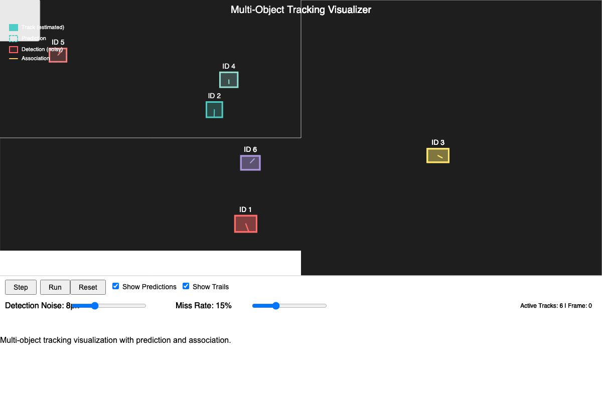 Interactive multi-object tracking demonstration showing the predict-associate-update cycle with bounding boxes, track IDs, and data association.
-
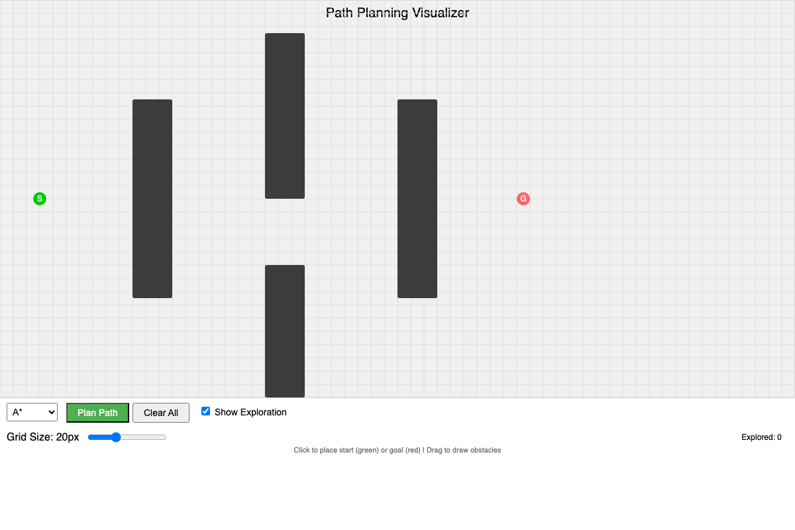 Interactive comparison of path planning algorithms (A*, Dijkstra, RRT) showing exploration patterns, path quality, and performance metrics.
-
 Interactive trajectory optimization demonstration showing smoothness constraints, velocity limits, obstacle avoidance, and cost convergence.
Interactive trajectory optimization demonstration showing smoothness constraints, velocity limits, obstacle avoidance, and cost convergence.
Learning Tools
-
 Interactive visualization of the course concept dependency graph with 300 concepts and their relationships.
Interactive visualization of the course concept dependency graph with 300 concepts and their relationships.